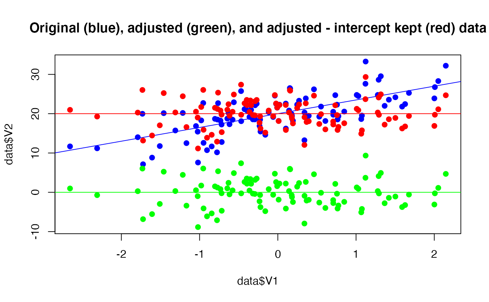

This function can be used to adjust the data for the effect of other variables present in the dataset. It is based on an underlying fitting of regressions models, allowing for quite some flexibility, such as including factors as random effects in mixed models (multilevel partialization), continuous variables as smooth terms in general additive models (non-linear partialization) and/or fitting these models under a Bayesian framework. The values returned by this function are the residuals of the regression models. Note that a regular correlation between two "adjusted" variables is equivalent to the partial correlation between them.
adjust( data, effect = NULL, select = NULL, exclude = NULL, multilevel = FALSE, additive = FALSE, bayesian = FALSE, keep_intercept = FALSE ) data_adjust( data, effect = NULL, select = NULL, exclude = NULL, multilevel = FALSE, additive = FALSE, bayesian = FALSE, keep_intercept = FALSE )
| data | A dataframe. |
|---|---|
| effect | Character vector of column names to be adjusted for (regressed
out). If |
| select | Character vector of column names. If |
| exclude | Character vector of column names to be excluded from selection. |
| multilevel | If |
| additive | If |
| bayesian | If |
| keep_intercept | If |
A data frame comparable to data, with adjusted variables.
#> rating complaints privileges learning raises critical #> 1 -8.1102953 5.5583770 -15.848949 -2.75102306 0.5742664 15.605502 #> 2 1.6472337 0.0646564 -1.422592 -3.06207012 -1.5567655 -2.315781 #> 3 1.0605589 -7.5116953 11.174609 5.59808033 4.8603132 8.061801 #> 4 -0.2268416 3.8345277 -4.567441 0.03866933 -7.1185324 13.002574 #> 5 6.5462010 -1.2420122 -3.051098 0.87312095 -2.7131349 6.500353 #> 6 -10.9418499 5.2030745 2.664156 -1.24552098 4.1370346 -21.678382 #> advance #> 1 2.8684130 #> 2 5.3937097 #> 3 -6.4236221 #> 4 -0.3951046 #> 5 2.1988621 #> 6 -3.1912418#> rating complaints privileges learning raises critical advance #> 1 -9.8614202 51 30 39 61 92 45 #> 2 0.3286522 64 51 54 63 73 47 #> 3 3.8009933 70 68 69 76 86 48 #> 4 -0.9167380 63 45 47 54 84 35 #> 5 7.7641147 78 56 66 71 83 47 #> 6 -12.8798594 55 49 44 54 49 34# \donttest{ if (FALSE) { adjust(attitude, effect = "complaints", select = "rating", bayesian = TRUE) adjust(attitude, effect = "complaints", select = "rating", additive = TRUE) attitude$complaints_LMH <- cut(attitude$complaints, 3) adjust(attitude, effect = "complaints_LMH", select = "rating", multilevel = TRUE) } # } if(require("bayestestR") && require("MASS")){ # Generate data data <- bayestestR::simulate_correlation(n=100, r=0.7) data$V2 <- (5 * data$V2) + 20 # Add intercept # Adjust adjusted <- adjust(data, effect="V1", select="V2") adjusted_icpt <- adjust(data, effect="V1", select="V2", keep_intercept=TRUE) # Visualize plot(data$V1, data$V2, pch = 19, col = "blue", ylim=c(min(adjusted$V2), max(data$V2)), main = "Original (blue), adjusted (green), and adjusted - intercept kept (red) data") abline(lm(V2 ~ V1, data = data), col = "blue") points(adjusted$V1, adjusted$V2, pch = 19, col = "green") abline(lm(V2 ~ V1, data = adjusted), col = "green") points(adjusted_icpt$V1, adjusted_icpt$V2, pch = 19, col = "red") abline(lm(V2 ~ V1, data = adjusted_icpt), col = "red") }#>#>#>